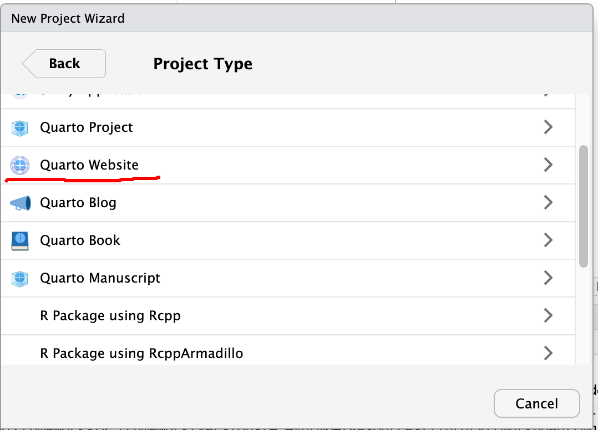

Develop Websites using R
With RStudio and Quarto, there are quite a few options to develop simple but neat websites. From the RStudio, New Project, we can create Quarto Website, Bookdown, blogdown, and Simple R Markdown websites. Particularly for Quarto Website, all the interactive capabilities allowed by OJS could be incorporated.

The Quarto Website is based on a bootstrap template and has a simplistic appearance.
Importantly, Quarto or R markdown can directly hold DIV, which can be used by many JavaScript libraries to plot charts, maps, or tables.
This is a DIV Section with an ID of “ll_map” and style of “width: 100%; height: 400px”.
JavaScript files could be included in HTML options using “include-in-header”, “include-before-body”, and “include-after-body”.
Quart Markdown can also directly use OJS, htmlwidgets to add maps and interactivity to the rendered webpages.
Jekyll and Jekyll Themes
Today, way more people are using Jekyll and pre-defined Jekyll Theme to develop websites. Starting from scratch is too time-consuming for most developers. Here are a few key steps, with Mac OS as an example.
Install Jekyll Ruby
- Following the Jekyll installation guide. This is the simplest way to install Jekyll
Install Ruby: a more complicated way
Although Ruby is installed on Mac by default, it is necessary to install the lasted and an independent version of Ruby to avoid interference with the system default.
In order to do that, we need some Ruby Installer or Version/Environment Manager
On Mac OS
Install Homebrew, which is a package management system on Mac OS written in Ruby.
Basically, just run the following bash command/script
/bin/bash -c "$(curl -fsSL https://raw.githubusercontent.com/Homebrew/install/HEAD/install.sh)"Follow the prompts to add brew to shell path.
Install
rbenv, a version management tool for Ruby programming languageRun
brew install rbenvAs instructed, run
rbenv initand restart terminal to make it take effects
-
- Although
Homebrewcan install Ruby directly withbrew install ruby, it is not recommended asrbenvgives us more control. This is similar to howcondaworks for Python. - Use
rbenv install -lto show the latest stable version - Use
rbenv install 3.3.5to install a specific version
- Although
Download the templates from Github to the local computer
Follow the theme instructions
Some folders and documents such as online documentation are not used and can be deleted.
Edit the pages of the website
Build, Test, and Serve
Pay attention to the error messages.
Use
bundleto install Ruby gems indicated in the project Gemfile.Basically, we need to remove the
_sitefolder first by usingrm -f -r _sitecommand.Using
jekyll buildto build the siteOr using
jekyll serveto start serving for the website for development